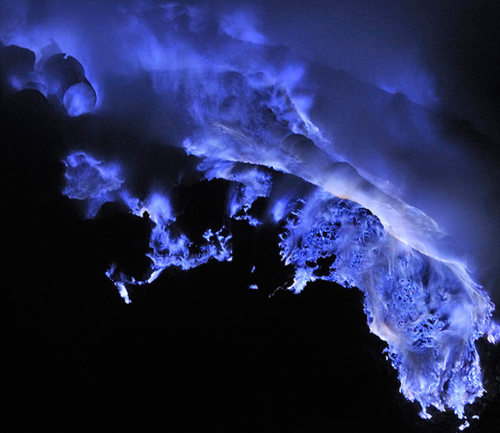

Thu, 09 Dec 2010 08:07:00 · photo · documentary · mountains · java · indonesia
Photo Documentary: Sulfur Miners in East Java

Photographer Olivier Grunewald definitely outdone himself in capturing these surreal images of the burning blue flames in Kawah Ijen volcano, East Java, Indonesia.
This captivating photo documentary depicts the sulfur miners’ daily routine to retrieve heavy chunks of pure sulfur from the crater’s deep lake. A classic struggle of human vs nature.